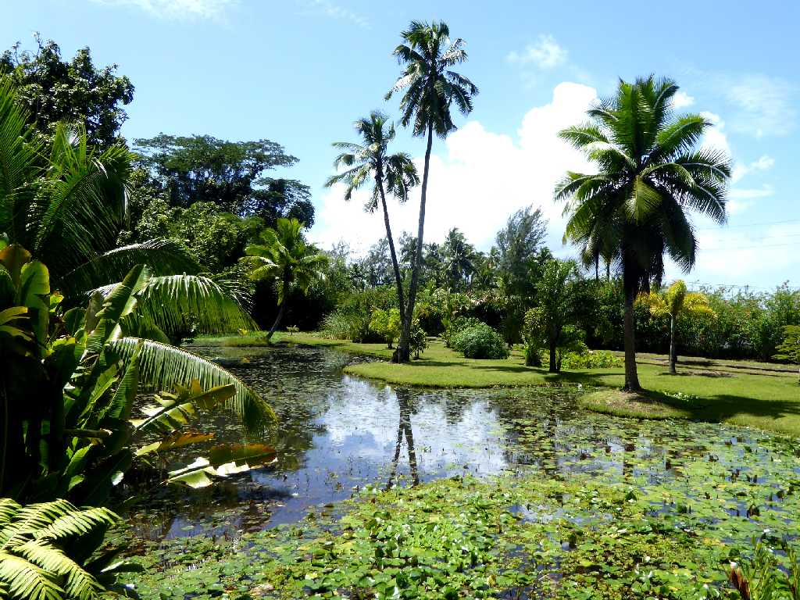
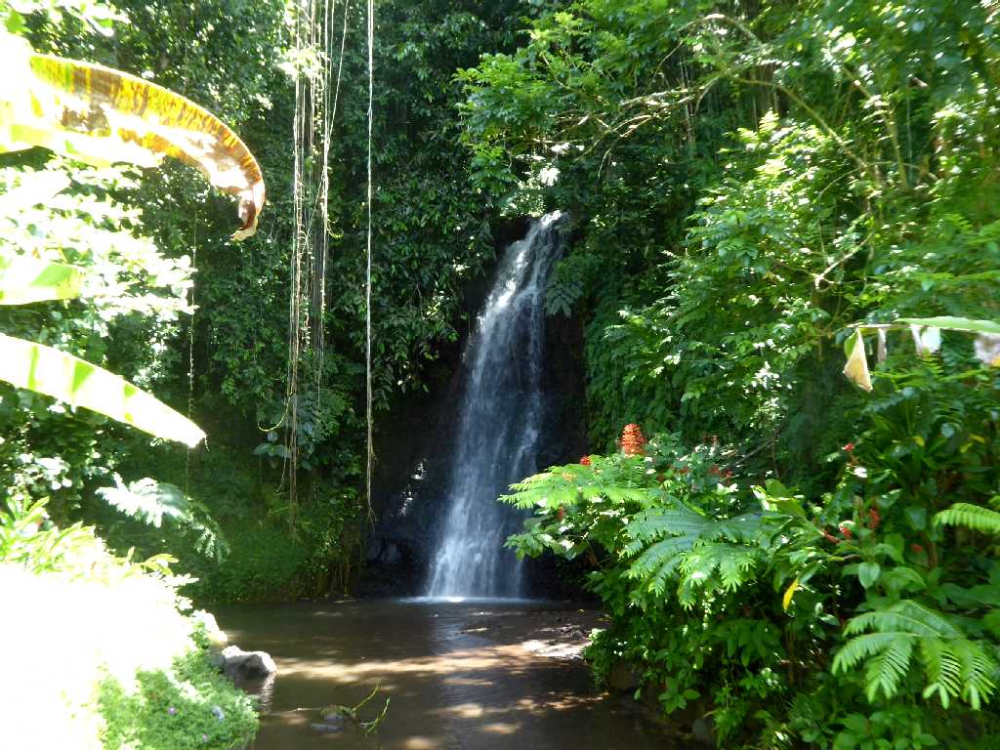
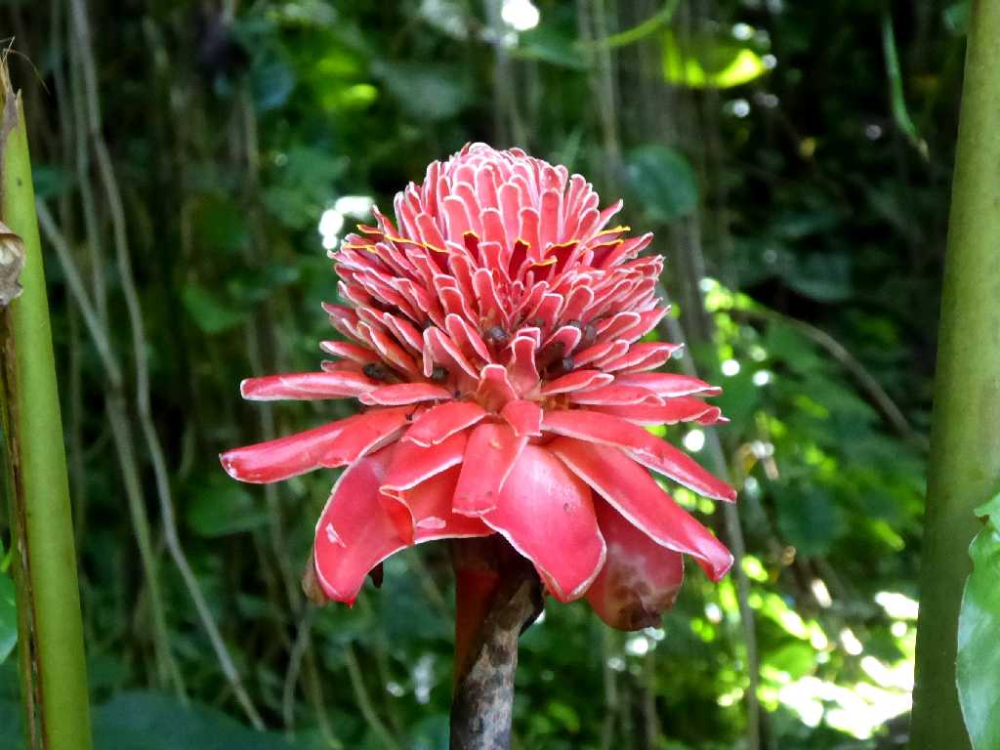
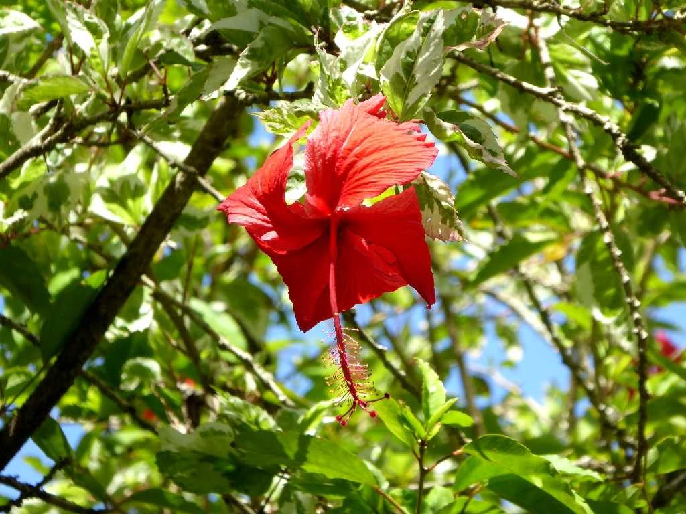
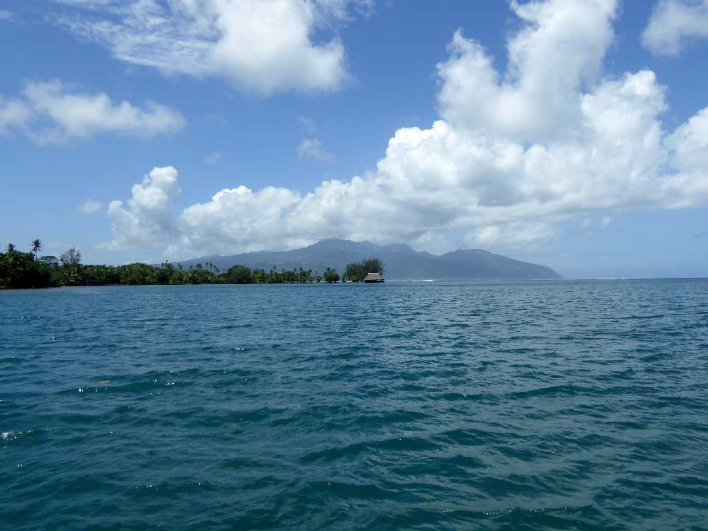
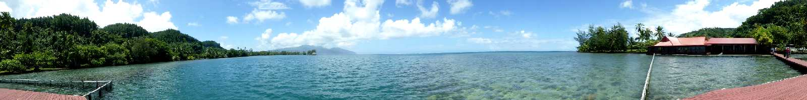

Jardin d'eau Vaipahi Tahiti Island

Waterfall Vaipahi

Rose de Porcelaine (Torch Ginger) Vaipahi

Hibiscus Vaipahi

Tahiti Iti from Tahiti Nui Ataiti Tahiti Island

Restaurant Du Musée Gauguin Ataiti
March 12 2016 Tahiti Iti Ataiti